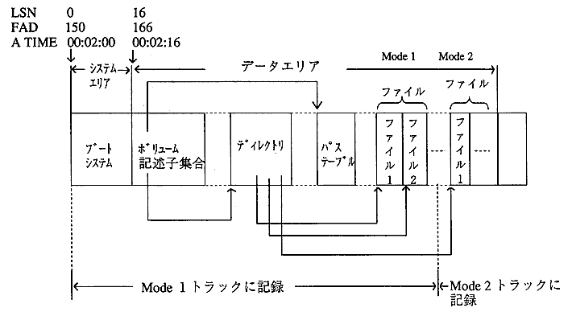
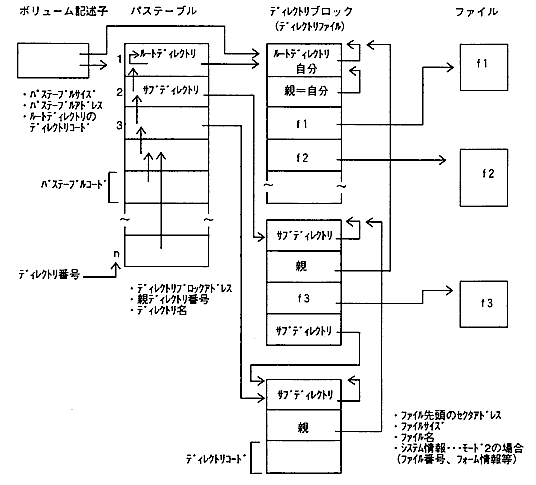
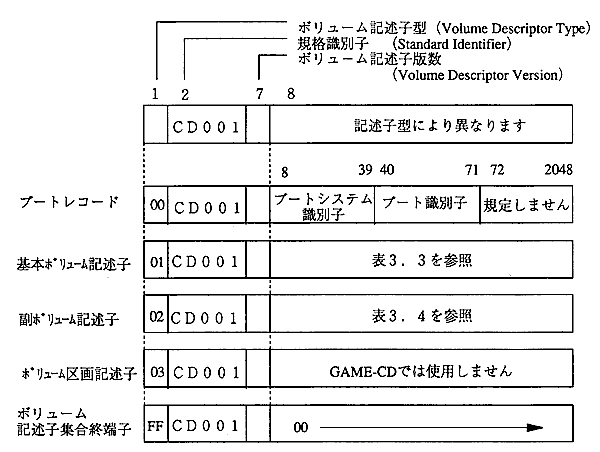

★PROGRAMMER'S GUIDE
★DISCフォーマット規格仕様書
★PROGRAMMER'S GUIDE
★DISCフォーマット規格仕様書
図3.1 CD-ROMエリア、CD-ROM XAエリアの概要

略 号 | 型 名 | 説 明 |
|---|---|---|
N | Numeric Value | 8ビットバイナリ数値 |
NL | Least Significant Byte First | LSBF表記16/32ビットバイナリ数値 |
NM | MostSignificant Byte First | MSBF表記16/32ビットバイナリ数値 |
NB | Both-type orders | LSBF表記＋MSBF表記 |
ND | Any digit from ZERO-NINE | 10進数表記の数値 |
A | A-characters | ASCII文字列（20-22/25-3F/41-5A/5F） |
D | D-characters | ディレクトリ用文字列（30-3F/41-5A/5F） |
DS | D-characters, SEPARATOR1, | D-characters+'.;'(2E/3B) |
DE | Directory Entry | ディレクトリエントリ形式 |
A1 | A1-characters | A-characters+Kanji |
D1 | D1-characters | D-characters+Kanji |
D1S | D1-characters,SEPARATOR1, | D1-characters+'.;'(2E/3B) |
00 | Zero fill | 未使用、予約領域等を（00）で埋めます |
図3.2 CD-ROM(ISO9660)におけるファイル管理のデータ構造

図3.3 ボリューム記述子

バイト位置 | 型 | フィールド名称 | 説 明 |
|---|---|---|---|
1 |
N |
Volume Descriptor Type |
ボリューム記述子型 |
 |
通常のGAME-CDでは、基本ボリューム記述子とボリューム記述子集合終端子がそれぞれ１セクタずつ記録されます。 この２セクタは必ず記録されていなければなりません。 |
|
副ボリューム記述子とブートレコードは、使用方法をよく理解したうえでご利用ください。 |
バイト位置 | 型 | フィールド名称 | 説 明 |
|---|---|---|---|
1 |
N |
Volume Descriptor Type |
ボリューム記述子型 ＝01 |
バイト位置 | 型 | フィールド名称 | 説 明 |
|---|---|---|---|
1025〜1032 |
|
Identifying Signature |
'CD-XA001' |
バイト位置 | 型 | フィールド名称 | 説 明 |
|---|---|---|---|
1 |
N |
Volume Descriptor Type |
ボリューム記述子型 |
８文字以内 ｜ ３文字以内、省略可 ｜ ｜ １〜３２７６７の数字（常に１とします） ↓ ↓ ↓ ファイル識別 → ファイル名．拡張子；版数 ↑ ↑ ↑ ｜ ｜ 区切文字２「セミコロン」 ｜ 区切文字数１「ピリオド」 ｜ ディレクトリ名：８文字以内 （ルートディレクトリは１バイト00Hとします）
バイト位置 | 型 | フィールド名称 | 説 明 |
|---|---|---|---|
1 |
N |
Length of Directory Record |
ディレクトリレコードの長さ |
バイト位置 | 型 | フィールド名称 | 説 明 |
|---|---|---|---|
1 |
N |
Number of years since 1900 |
1900年からの年数 |
ビット位置 | フィールド名称 | 説 明 |
|---|---|---|
0 |
Existence |
不可視ファイル |
Directoryビットの値 | 形 式 | 説 明 |
|---|---|---|
0 | ファイル名．拡張子；版数番号 | ファイル名：8文字以内 |
1 | ディレクトリ名 | ディレクトリ名：8文字以内 |
バイト位置 | 型 | フィールド名称 | 説 明 |
|---|---|---|---|
1〜 4 |
NM |
|
所有者グループID、所有者ID |
ビット位置 | フィールド名称 | 説 明 |
|---|---|---|
0 |
Owner Read |
|
バイト位置 | 型 | フィールド名称 | 説 明 |
|---|---|---|---|
1 |
N |
Length of Directory Identifier |
ディレクトリ名の長さ |
★PROGRAMMER'S GUIDE
★DISCフォーマット規格仕様書